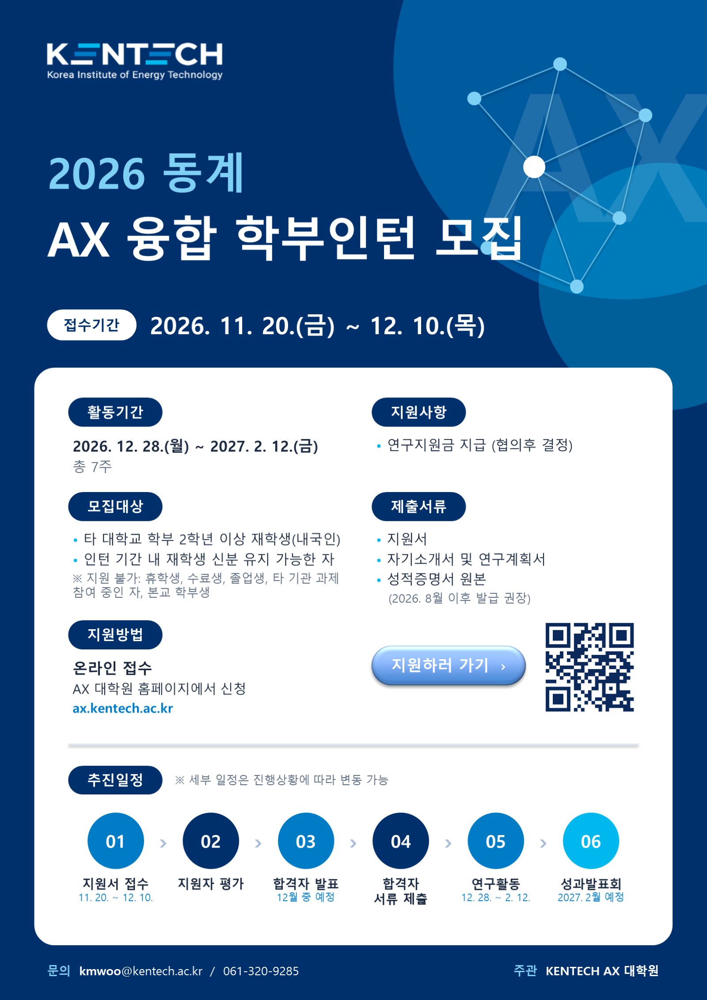

모집 개요
| 접수기간 | 2026. 11. 20.(금) ~ 12. 10.(목) |
|---|---|
| 활동기간 | 2026. 12. 28.(월) ~ 2027. 2. 12.(금), 총 7주 |
| 모집대상 |
※ 지원 불가: 휴학생, 수료생, 졸업생, 타 기관 과제 참여 중인 자, 본교 학부생 |
| 지원사항 | 연구지원금 지급 (협의 후 결정) |
| 지원방법 | 온라인 접수 — 이 페이지 아래 또는 홈페이지 상단의 동계인턴 지원 버튼에서 지원서를 작성하고 제출서류를 첨부합니다. |
| 제출서류 |
|
| 참여 연구실 | 에너지AI · 에너지신소재 · 차세대그리드 · 수소에너지 · 환경기후기술 트랙 32개 연구실 (붙임1 참고) |
추진 일정
- 지원서 접수
11. 20. ~ 12. 10.
- 지원자 평가
- 합격자 발표
12월 중 예정
- 합격자 서류 제출
- 연구활동
12. 28. ~ 2. 12.
- 성과발표회
2027. 2월 예정
※ 세부 일정은 진행상황에 따라 변동될 수 있습니다.
문의
KENTECH AX대학원 · kmwoo@kentech.ac.kr · 061-320-9285